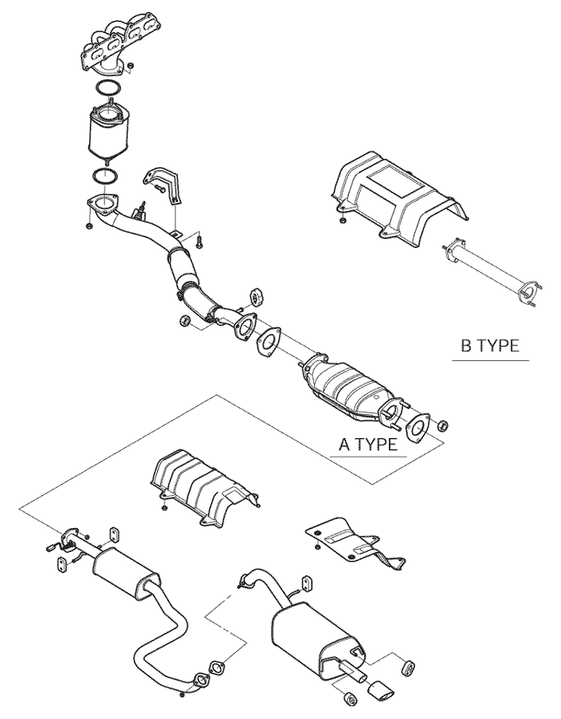
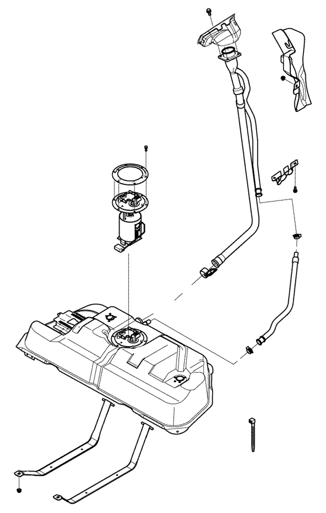
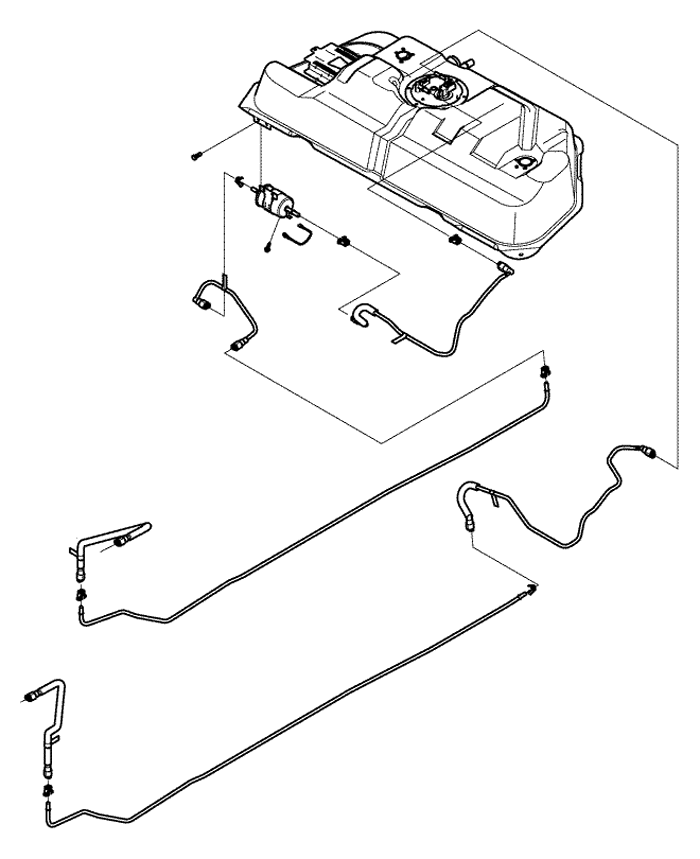
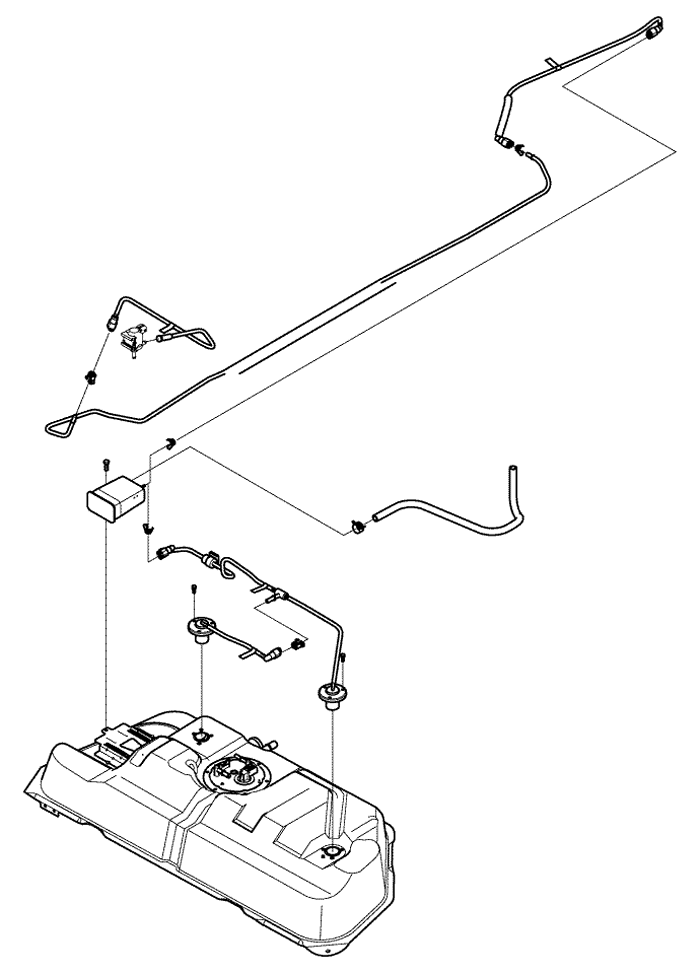

SECCIÓN 4
BAJOS DEL VEHÍCULO
INSPECCIÓN DE LOS BAJOS DEL VEHÍCULO
Eleve el vehículo para realizar todas las inspecciones recogidas en esta sección.
Inspeccione visualmente los bajos del vehículo en buscas de aprietes defectuosos, componentes que falten y disposición de las tuberías y recortes, así como fugas de líquidos. - Apriete las abrazaderas, conexiones
- Estado de las tuberías de freno, mangueras y conexiones
- – Punto defectuoso
- – Fugas de aceite
- – Torsión
- – Dilatación
1. MECANISMO DE LA DIRECCIÓN Y VARILLAJE
Compruebe el mecanismo de la dirección y el varillaje.
2. POSICIÓN CORRECTA DE LA ABRAZADERA DE LA BARRA DE ACOPLAMIENTO
Compruebe la abrazadera de la barra de acoplamiento.


3. ALINEACIÓN Y HUELGO CORRECTO EN EL SISTEMA DE ESCAPE
Compruebe el sistema de escape.

4. SUSPENSIÓN DELANTERA Y TRASERA
Compruebe la suspensión delantera y trasera.

Suspensión delantera

Suspensión trasera
5. COMPROBAR NIVEL DE ACEITE DEL EJE Y LA TRANSMISIÓN MANUAL
- – añadir según estime necesario

6. SISTEMA DE FRENOS
Compruebe el nivel de líquido de freno, cilindros de freno, conductos, mangueras y el freno de estacionamiento. De existir, debe comprobar el ABS

7. SISTEMA DE COMBUSTIBLE
Compruebe el depósito de combustible, la bomba de combustible, conexión de las mangueras y conductos de combustible, inyectores de combustible, indicador del nivel de combustible y cánister.



8. ÁRBOL IMPULSOR DE LOS EJES DELANTEROS
Revise el árbol impulsor en busca de óxido, deformación y estado del conjunto.

9. INSPECCIÓN VISUAL DE LOS PERNOS DE RUEDA Y TUERCAS DE BRIDA
Retire las cubiertas de rueda y compruebe los pernos de rueda y las tuercas de brida.
Par de apriete de los pernos de rueda: 12 kgf•m (120 N·m)

10. INFLE LOS NEUMÁTICOS A LA PRESIÓN ESPECIFICADA
Compruebe la presión de inflado de los neumáticos.